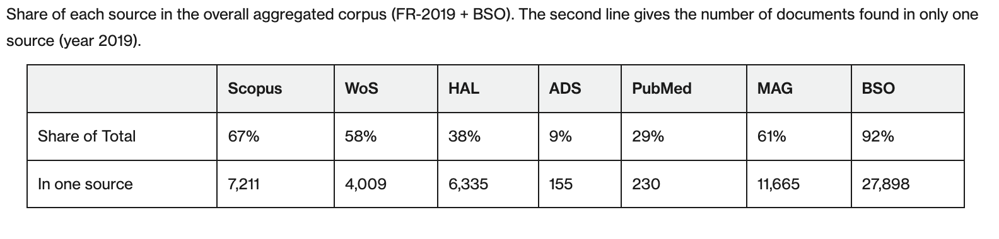
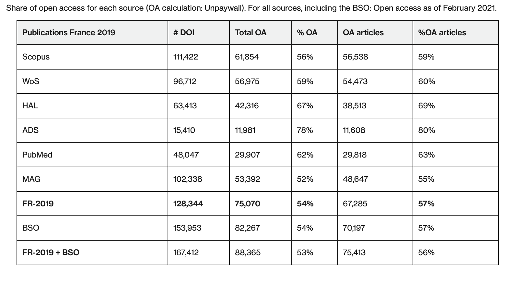
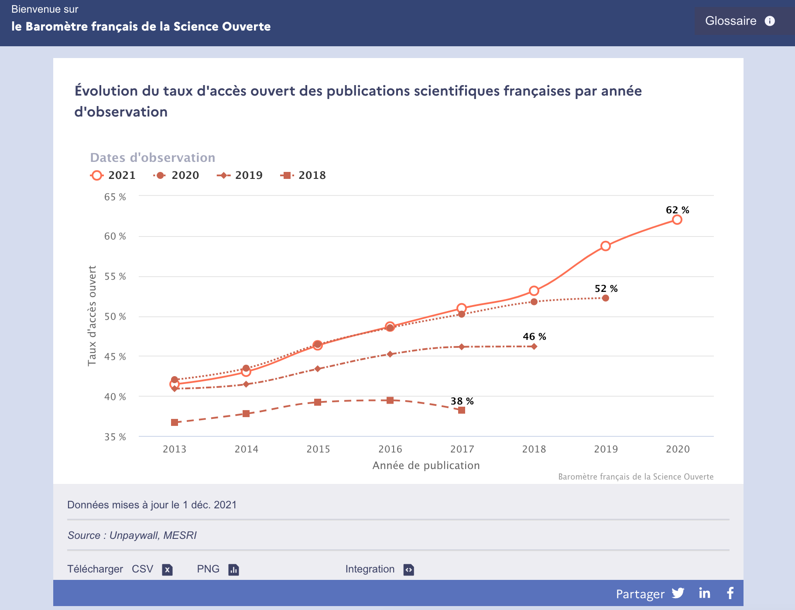
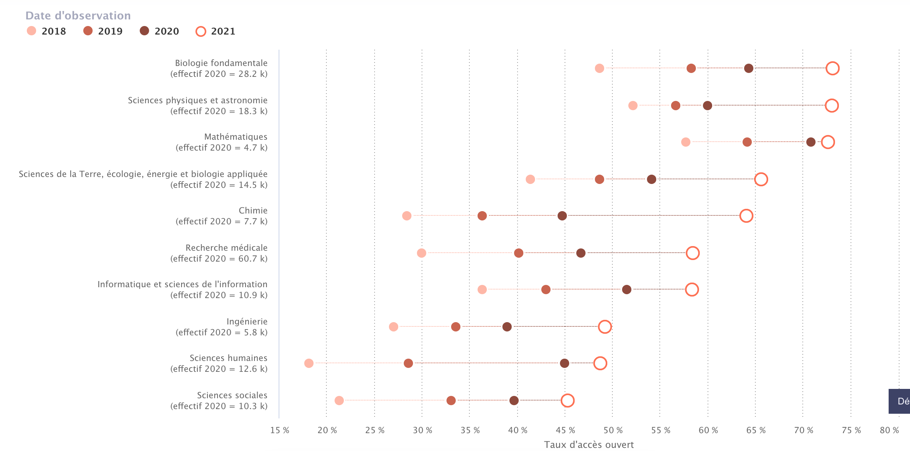
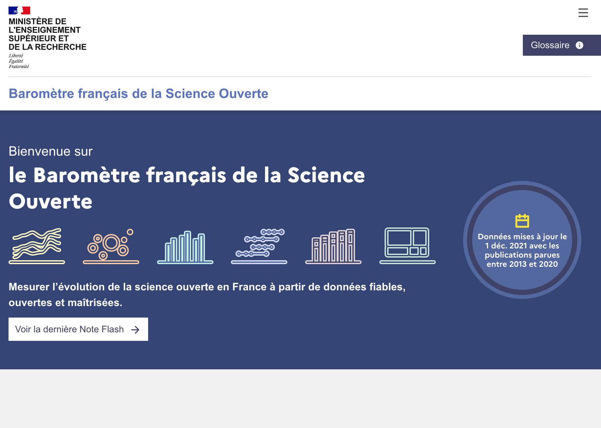
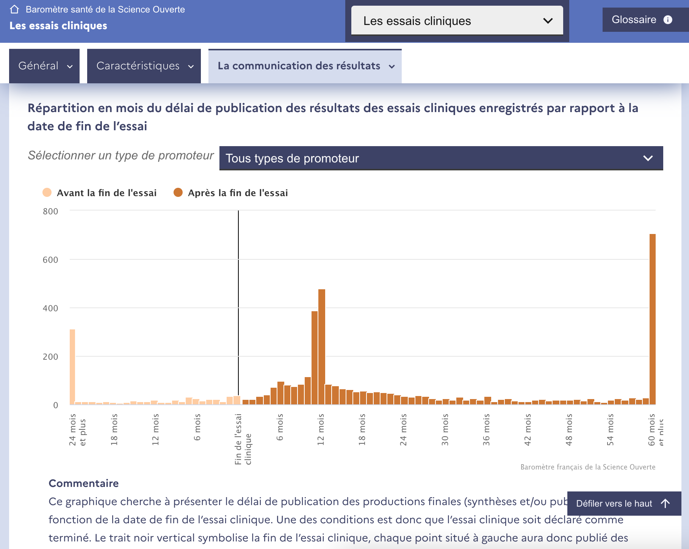

The French Open Science Monitor
steering the science based on open bibliographic databases
February 3, 2024
FOSDEM
Anne L'Hôte

Key points
The French Open Science Monitor (FOSM) supports public policy on open science
- 📈 since 2018, + more than 29 open access points in 5 years. Public policies target 100% by 2030.
- without using proprietary sources (incompatible with sharing, creation of open and non-representative services)
- 🤖 estimated by automatic learning for missing metadata
- 📊 strategy validated by the study by L. Chaignon and D. Egret (2022)
- 🔍 sensitivity of the AO rate to sources and to the observation date
- 🪆open code, data and services, dozens of local variations
- 🖥️ website redesign in 2021 frenchopensciencemonitor.esr.gouv.fr
- 🧭 extended scope of analysis in line with public policy (including clinical trials, codes and future research data)
The FOSM is a command for monitoring and steering public policy
-
📔 Respecting several expectations, in particular
- taking into account bibliodiversity
- sharing and openness to encourage transparency and reproducibility
- ⏳ That adapts to constraints and changes in public policy
- first snapshot of the open access situation at the end of 2018
- gradual extension of indicators and scope
-
🧗 These constraints led us to choose the difficult path
- at the methodological level, in particular for detection of affiliations and disciplinary fields
- at the operational level, with a IT infrastructure adapted
A modular approach ...

... capitalizing on and complementing existing open sources
🏗️ Built at MESR within the FOSM framework
- 🏛️ Affiliations metadata
- PubMed, Crossref, HAL
- 🏗️ Crawling web pages
- 🏗️ Automatic country detection
- 🔍 Characterization of open access
- Open access detection: Unpaywall
- 🏗️ Classification of open access types
- 🤖 Thematic classification
- Training data : Pascal and Francis, Field of Research (FoR)
- 🏗️ Automatic classification models (fastText)
Comparison with major international databases
Lauranne Chaignon, Daniel Egret; Identifying scientific
publications countrywide and measuring their open access: The case of the French Open Science Monitor (FOSM).
Quantitative Science Studies 2022; 3 (1): 18-36. doi: https://doi.org/10.1162/qss_a_00179

- "The open-source strategy used by the FOSM effectively identifies the vast majority of publications with a persistent identifier (DOI) for Open Science monitoring."
Sensitivity of open access rate measurement (1/3)
Lauranne Chaignon, Daniel Egret; Identifying scientific
publications countrywide and measuring their open access: The case of the French Open Science Monitor (FOSM).
Quantitative Science Studies 2022; 3 (1): 18-36. doi: https://doi.org/10.1162/qss_a_00179

The OA rate varies according to the source, but the more diversified the source, the lower the
sensitivity.
greater
Sensitivity of open access rate measurement (2/3)
The OA rate varies according to the date of observation (which is rarely specified).

Sensitivity of open access rate measurement (3/3)
Numerous dimensions analyzed in the FOSM: discplines, publication type, languages, distribution platform,
etc.
platform ...

Information-sharing services for a variety of uses
- "General" audience : website, designed with the help of design agency WeDoData frenchopensciencemonitor.esr.gouv.fr
- Demultiplier : to provide the means to build a local variation (establishment, laboratory, etc.) very easily and with the same rendering as the national FOSM (cf. the FOSM local variation for University of Lorraine)
- Data export : dump of datasets available for download in CSV, jsonL
- Academic : detailed methodology available on HAL
- IT : the source code is open
New for 2021: new website
New for 2021: analysis by observation date
New for 2021: health section
Next milestones
- 🗄️ Integration of indicators for research data and software codes
- 🧑🎓 Integration of indicators for doctoral theses
- 📍 New functions for local variations of the FOSM (funders, HAL identifiers)